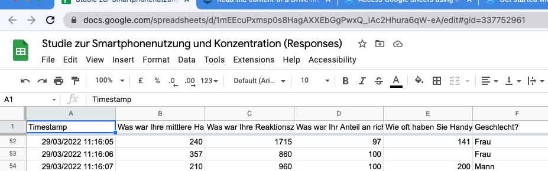

1 Load packages
library(tidyverse) # data wrangling
library(googlesheets4) # GSheets API
library(gt) # html tables2 Motivation
Data sharing is of primary concern for science and, increasingly, technology. Whereas there are specialized repositories for data storage and exchange (which are very useful), at times more quick and dirty solutions are desirable. This is what we are looking at in this post: Using GoogleSheets for quick data access.
3 Find your GoogleSheets File
You need the URL (or the id) of you GSheets file. Go locate it, see the example below:
knitr::include_graphics("gsheets-url.png")
Here’s the sheet’s URL:
sheet_url <- "https://docs.google.com/spreadsheets/d/1mEEcuPxmsp0s8HagAXXEbGgPwxQ_IAc2Hhura6qW-eA/edit?usp=sharing"4 Authentificate
First step (after starting the package(s)) is to authentificate:
gs4_deauth()You’ll be directed to a Google Login page. Use your Google credentials to sign-in.
(Note that this approach only works in an interactive session, where the Google credentials are handed over by the user’s sign-in approval.)
Here we are assuming that the the sheet is freely accessible.
5 Read it
Use the following function in an interactive session:
d <- read_sheet(sheet_url)Yielding this result:
` ✓ Reading from “Studie zur Smartphonenutzung und Konzentration (Responses)”.
✓ Range Form responses 1. `
6 Check
d %>%
head() %>%
gt()| Timestamp | Was war Ihre mittlere Handynutzungszeit in der letzten Woche in ganzen Minuten? | Was war Ihre Reaktionszeit im Stroop-Test (Herr Gaul) in Millsekunden? | Was war Ihr Anteil an richtigen Antworten im Stroop-Test in Prozent? | Wie oft haben Sie Handy pro Tag entsperrt (im Schnitt) letzte Woche? | Geschlecht? |
|---|---|---|---|---|---|
| 2022-03-29 11:13:09 | 281.0 | 1122 | 100 | 155 | Frau |
| 2022-03-29 11:13:21 | 219.0 | 1911 | 96 | 114 | Mann |
| 2022-03-29 11:13:33 | 210.0 | 1006 | 100 | 200 | Frau |
| 2022-03-29 11:13:34 | 217.0 | 1375 | 98 | 171 | Frau |
| 2022-03-29 11:13:37 | 266.0 | 1249 | 98 | 124 | Frau |
| 2022-03-29 11:13:38 | 7.3 | 1203 | 98 | 120 | Mann |
d %>%
glimpse()
#> Rows: 95
#> Columns: 6
#> $ Timestamp <dttm> …
#> $ `Was war Ihre mittlere Handynutzungszeit in der letzten Woche in ganzen Minuten?` <dbl> …
#> $ `Was war Ihre Reaktionszeit im Stroop-Test (Herr Gaul) in Millsekunden?` <dbl> …
#> $ `Was war Ihr Anteil an richtigen Antworten im Stroop-Test in Prozent?` <dbl> …
#> $ `Wie oft haben Sie Handy pro Tag entsperrt (im Schnitt) letzte Woche?` <dbl> …
#> $ `Geschlecht?` <chr> …7 Rename
names(d) <- c("Timestamp", "usage_time", "rt", "correct_prop", "pickups_n", "sex")8 Some caveats
If the columns are not pure numbers, then the columns will be parsed as lists, which is more difficult to process afterwards. For that reason, it is preferable to force pure number responses in the form, where applicable.
9 Further reading
A good starting point is the docs page of googlesheets4.
In addition, there’s a cheatsheet available.
10 Reproducibility
#> ─ Session info ───────────────────────────────────────────────────────────────────────────────────────────────────────
#> setting value
#> version R version 4.1.3 (2022-03-10)
#> os macOS Big Sur/Monterey 10.16
#> system x86_64, darwin17.0
#> ui X11
#> language (EN)
#> collate en_US.UTF-8
#> ctype en_US.UTF-8
#> tz Europe/Berlin
#> date 2022-04-02
#>
#> ─ Packages ───────────────────────────────────────────────────────────────────────────────────────────────────────────
#> package * version date lib source
#> assertthat 0.2.1 2019-03-21 [1] CRAN (R 4.1.0)
#> backports 1.4.1 2021-12-13 [1] CRAN (R 4.1.0)
#> blogdown 1.8 2022-02-16 [2] CRAN (R 4.1.2)
#> bookdown 0.24.2 2021-10-15 [1] Github (rstudio/bookdown@ba51c26)
#> brio 1.1.3 2021-11-30 [1] CRAN (R 4.1.0)
#> broom 0.7.12 2022-01-28 [1] CRAN (R 4.1.2)
#> bslib 0.3.1 2021-10-06 [1] CRAN (R 4.1.0)
#> cachem 1.0.6 2021-08-19 [1] CRAN (R 4.1.0)
#> callr 3.7.0 2021-04-20 [1] CRAN (R 4.1.0)
#> cellranger 1.1.0 2016-07-27 [1] CRAN (R 4.1.0)
#> checkmate 2.0.0 2020-02-06 [2] CRAN (R 4.1.0)
#> cli 3.2.0 2022-02-14 [1] CRAN (R 4.1.2)
#> codetools 0.2-18 2020-11-04 [2] CRAN (R 4.1.3)
#> colorout * 1.2-2 2022-01-04 [1] Github (jalvesaq/colorout@79931fd)
#> colorspace 2.0-3 2022-02-21 [1] CRAN (R 4.1.2)
#> crayon 1.5.0 2022-02-14 [1] CRAN (R 4.1.2)
#> curl 4.3.2 2021-06-23 [1] CRAN (R 4.1.0)
#> DBI 1.1.2 2021-12-20 [1] CRAN (R 4.1.0)
#> dbplyr 2.1.1 2021-04-06 [1] CRAN (R 4.1.0)
#> desc 1.4.0 2021-09-28 [1] CRAN (R 4.1.0)
#> devtools 2.4.3 2021-11-30 [1] CRAN (R 4.1.0)
#> digest 0.6.29 2021-12-01 [1] CRAN (R 4.1.0)
#> dplyr * 1.0.8 2022-02-08 [1] CRAN (R 4.1.2)
#> ellipsis 0.3.2 2021-04-29 [1] CRAN (R 4.1.0)
#> evaluate 0.14 2019-05-28 [1] CRAN (R 4.1.0)
#> fansi 1.0.2 2022-01-14 [1] CRAN (R 4.1.2)
#> fastmap 1.1.0 2021-01-25 [2] CRAN (R 4.1.0)
#> forcats * 0.5.1 2021-01-27 [1] CRAN (R 4.1.0)
#> fs 1.5.2 2021-12-08 [1] CRAN (R 4.1.0)
#> gargle 1.2.0 2021-07-02 [1] CRAN (R 4.1.0)
#> generics 0.1.2 2022-01-31 [1] CRAN (R 4.1.2)
#> ggplot2 * 3.3.5 2021-06-25 [2] CRAN (R 4.1.0)
#> glue 1.6.2 2022-02-24 [1] CRAN (R 4.1.2)
#> googledrive 2.0.0 2021-07-08 [1] CRAN (R 4.1.0)
#> googlesheets4 * 1.0.0 2021-07-21 [1] CRAN (R 4.1.0)
#> gt * 0.3.1 2021-08-07 [1] CRAN (R 4.1.0)
#> gtable 0.3.0 2019-03-25 [1] CRAN (R 4.1.0)
#> haven 2.4.3 2021-08-04 [1] CRAN (R 4.1.0)
#> highr 0.9 2021-04-16 [1] CRAN (R 4.1.0)
#> hms 1.1.1 2021-09-26 [1] CRAN (R 4.1.0)
#> htmltools 0.5.2 2021-08-25 [1] CRAN (R 4.1.0)
#> httr 1.4.2 2020-07-20 [1] CRAN (R 4.1.0)
#> jquerylib 0.1.4 2021-04-26 [1] CRAN (R 4.1.0)
#> jsonlite 1.7.3 2022-01-17 [1] CRAN (R 4.1.2)
#> knitr 1.37 2021-12-16 [1] CRAN (R 4.1.0)
#> lifecycle 1.0.1 2021-09-24 [1] CRAN (R 4.1.0)
#> lubridate 1.8.0 2021-10-07 [1] CRAN (R 4.1.0)
#> magrittr 2.0.2 2022-01-26 [1] CRAN (R 4.1.2)
#> memoise 2.0.0 2021-01-26 [2] CRAN (R 4.1.0)
#> modelr 0.1.8 2020-05-19 [1] CRAN (R 4.1.0)
#> munsell 0.5.0 2018-06-12 [1] CRAN (R 4.1.0)
#> pillar 1.7.0 2022-02-01 [1] CRAN (R 4.1.2)
#> pkgbuild 1.2.0 2020-12-15 [2] CRAN (R 4.1.0)
#> pkgconfig 2.0.3 2019-09-22 [1] CRAN (R 4.1.0)
#> pkgload 1.2.4 2021-11-30 [1] CRAN (R 4.1.0)
#> prettyunits 1.1.1 2020-01-24 [1] CRAN (R 4.1.0)
#> processx 3.5.2 2021-04-30 [1] CRAN (R 4.1.0)
#> ps 1.6.0 2021-02-28 [1] CRAN (R 4.1.0)
#> purrr * 0.3.4 2020-04-17 [1] CRAN (R 4.1.0)
#> R6 2.5.1 2021-08-19 [1] CRAN (R 4.1.0)
#> Rcpp 1.0.8 2022-01-13 [1] CRAN (R 4.1.2)
#> readr * 2.1.2 2022-01-30 [1] CRAN (R 4.1.2)
#> readxl 1.3.1 2019-03-13 [1] CRAN (R 4.1.0)
#> remotes 2.4.0 2021-06-02 [2] CRAN (R 4.1.0)
#> reprex 2.0.1 2021-08-05 [1] CRAN (R 4.1.0)
#> rlang 1.0.2 2022-03-04 [1] CRAN (R 4.1.2)
#> rmarkdown 2.11 2021-09-14 [1] CRAN (R 4.1.0)
#> rprojroot 2.0.2 2020-11-15 [2] CRAN (R 4.1.0)
#> rstudioapi 0.13 2020-11-12 [1] CRAN (R 4.1.0)
#> rvest 1.0.2 2021-10-16 [1] CRAN (R 4.1.0)
#> sass 0.4.0 2021-05-12 [1] CRAN (R 4.1.0)
#> scales 1.1.1 2020-05-11 [1] CRAN (R 4.1.0)
#> sessioninfo 1.1.1 2018-11-05 [2] CRAN (R 4.1.0)
#> stringi 1.7.6 2021-11-29 [1] CRAN (R 4.1.0)
#> stringr * 1.4.0 2019-02-10 [1] CRAN (R 4.1.0)
#> testthat 3.1.2 2022-01-20 [1] CRAN (R 4.1.2)
#> tibble * 3.1.6 2021-11-07 [1] CRAN (R 4.1.0)
#> tidyr * 1.2.0 2022-02-01 [1] CRAN (R 4.1.2)
#> tidyselect 1.1.2 2022-02-21 [1] CRAN (R 4.1.2)
#> tidyverse * 1.3.1 2021-04-15 [1] CRAN (R 4.1.0)
#> tzdb 0.1.2 2021-07-20 [2] CRAN (R 4.1.0)
#> usethis 2.0.1 2021-02-10 [2] CRAN (R 4.1.0)
#> utf8 1.2.2 2021-07-24 [1] CRAN (R 4.1.0)
#> vctrs 0.3.8 2021-04-29 [1] CRAN (R 4.1.0)
#> withr 2.5.0 2022-03-03 [1] CRAN (R 4.1.2)
#> xfun 0.29 2021-12-14 [1] CRAN (R 4.1.0)
#> xml2 1.3.3 2021-11-30 [1] CRAN (R 4.1.0)
#> yaml 2.2.2 2022-01-25 [1] CRAN (R 4.1.2)
#>
#> [1] /Users/sebastiansaueruser/Library/R/x86_64/4.1/library
#> [2] /Library/Frameworks/R.framework/Versions/4.1/Resources/library